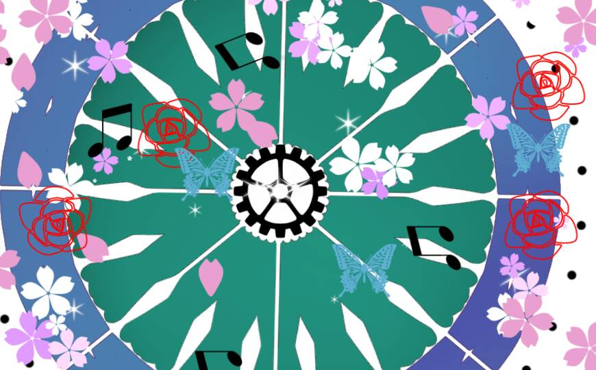

命運之輪
Wheel Of Fortune
四大元素：元素火--四季更迭
代表神話人物：命運三女神摩伊賴
命運之輪是千萬生靈的主宰者，也是轉捩點的象徵。 對命運之輪來說，學著順應自然才能夠呈現在最自由的狀態。 或許會覺得事情的進展緩慢，但任何情形都阻擋不了命運之輪的轉動。
命運之輪主宰所有生命，代表隨著時間經過的「蛻變」。 卡牌帶來的是改變的契機，凡事順應變化而為之能帶給你莫大的助益。
離開卡牌